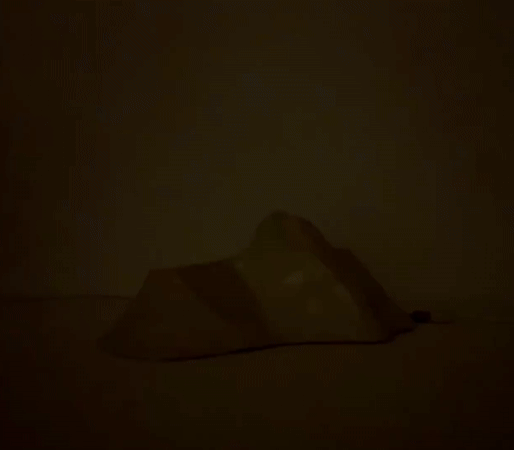
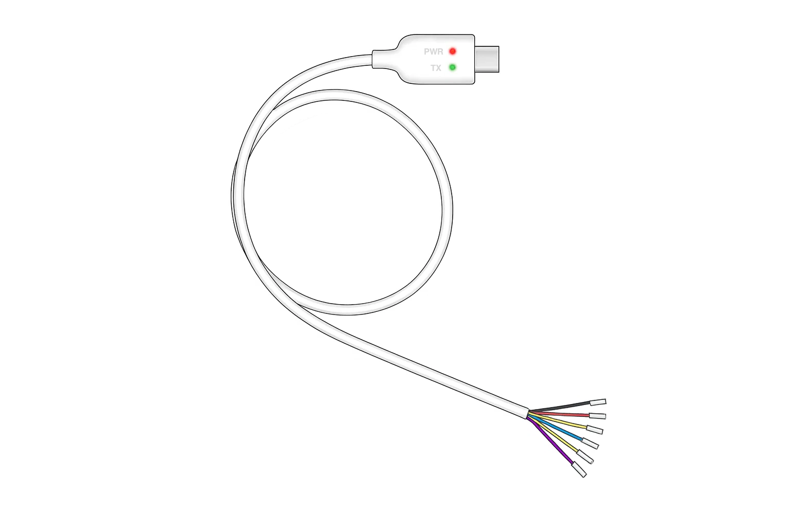
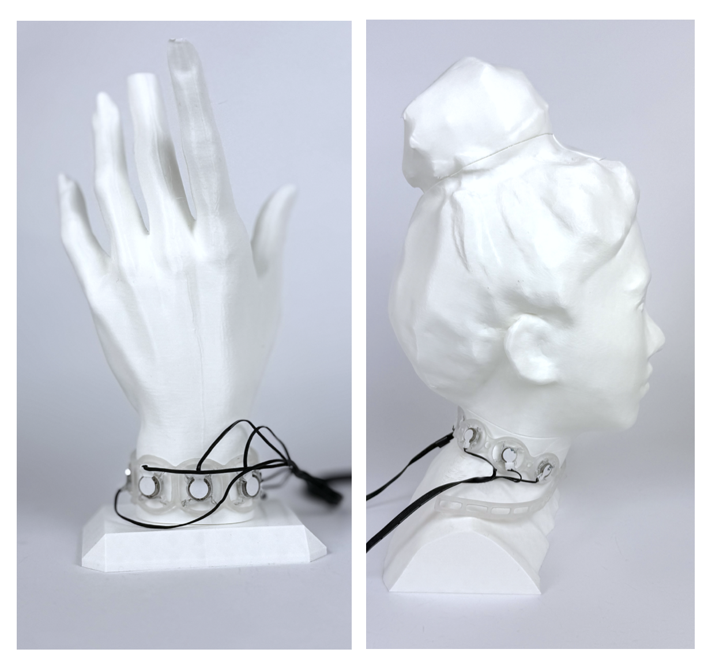
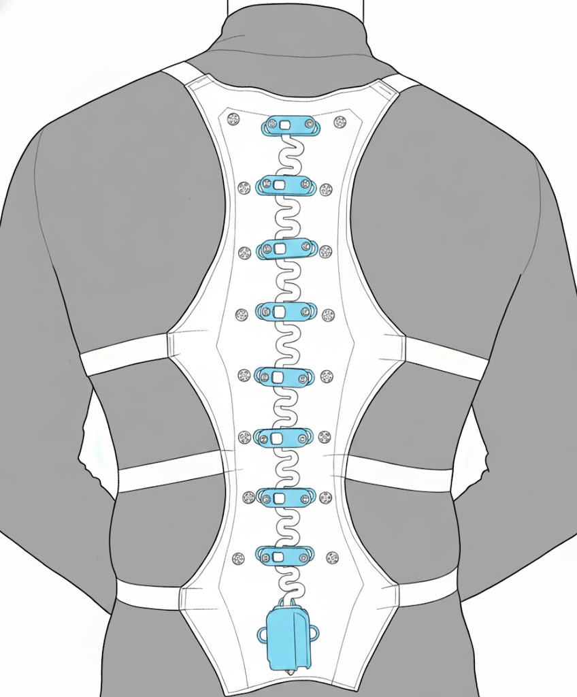
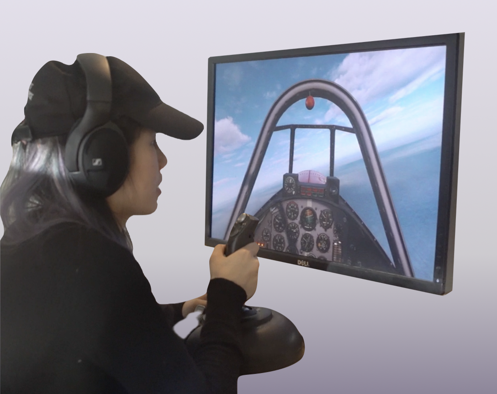
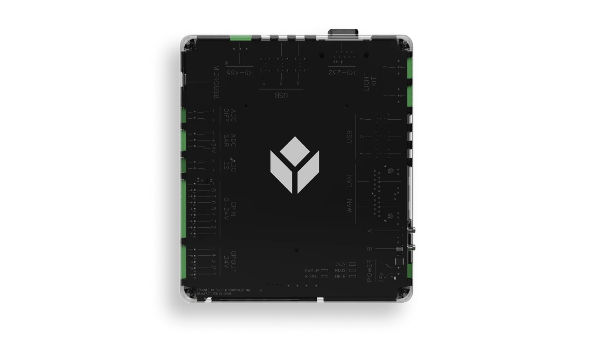
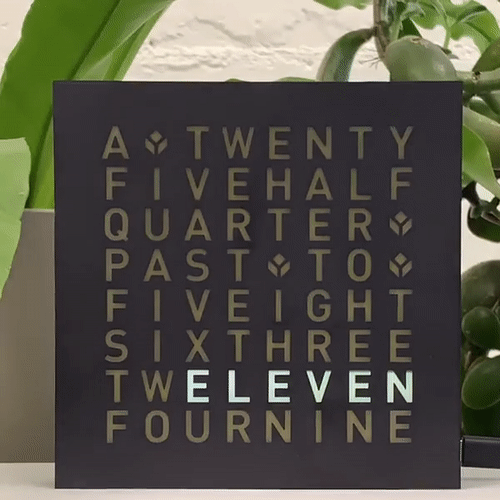
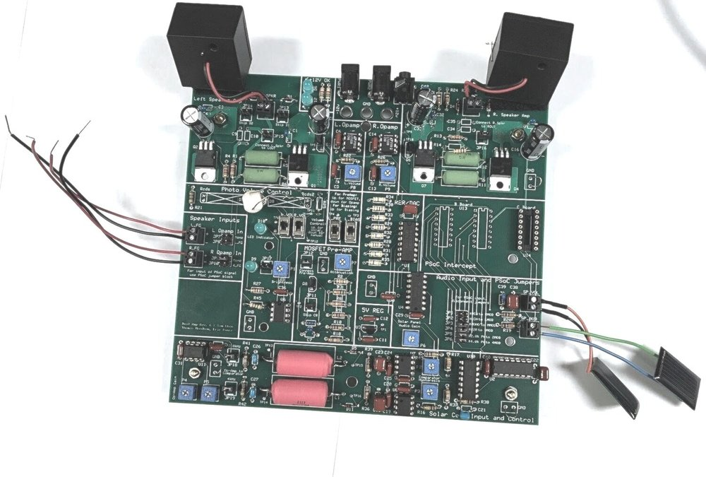
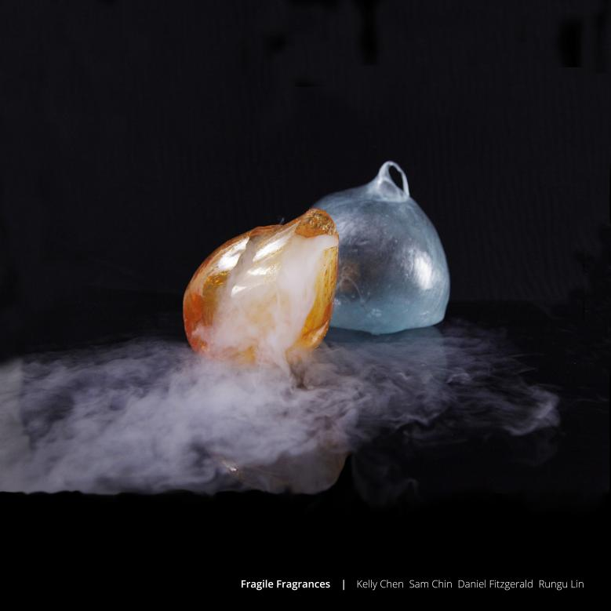
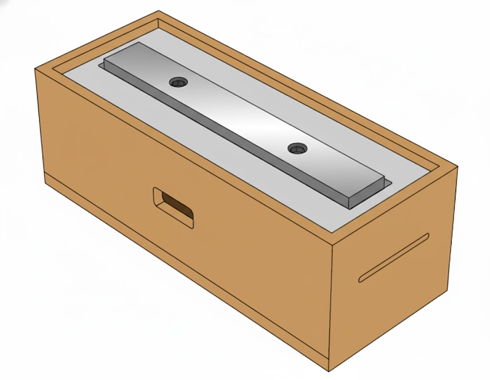

Projects


Multisensory Swarm Teleoperation
A haptic jacket and spatial audio system for teleoperating aerial drone swarms, translating swarm state into intuitive tactile and auditory feedback.

Cable Cat
A versatile multi-protocol cable for hardware development integrating UART, SPI, and I2C protocols.

HapticHearing
A wearable multi-actuator haptic system that complements residual hearing with personalized tactile feedback for speech perception in hearing loss.

Purrfect Pitch
A wearable haptic device and learning interface for musical ear training that helps novice learners identify pitch intervals more accurately through multisensory feedback.

Haptics for Flight Attitude Recovery
Evaluating head-mounted displays for recovery from unusual flight attitudes under normal and visually-degraded conditions.

Tulip Edge Device
Second generation gateway for Tulip's manufacturing platform, integrating analog, digital, and communications interfaces.

Gizmo Word Clock
Interactive demo for Tulip combining smart work instructions, device integrations, IoT connectivity and analytics.

Laser Audio System
A system to send and control music over a laser, featuring audio transmission and volume control via modulated laser light.

Inflated Appetite
Explorations in food interaction design through inflated foods and flavored air captured in sugar bubbles.

Stairpeggio (Piano Staircase)
An electro-mechanical piano staircase using real glockenspiel keys to produce sound when users step on each stair.